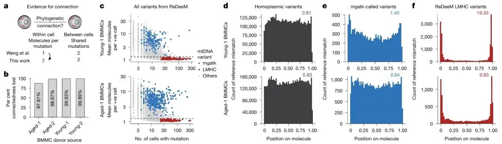
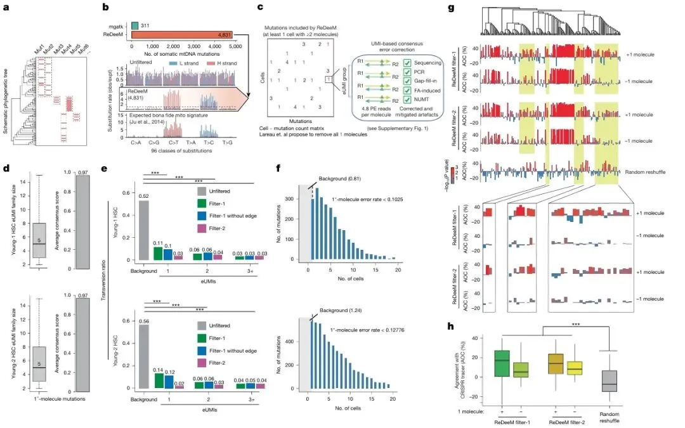
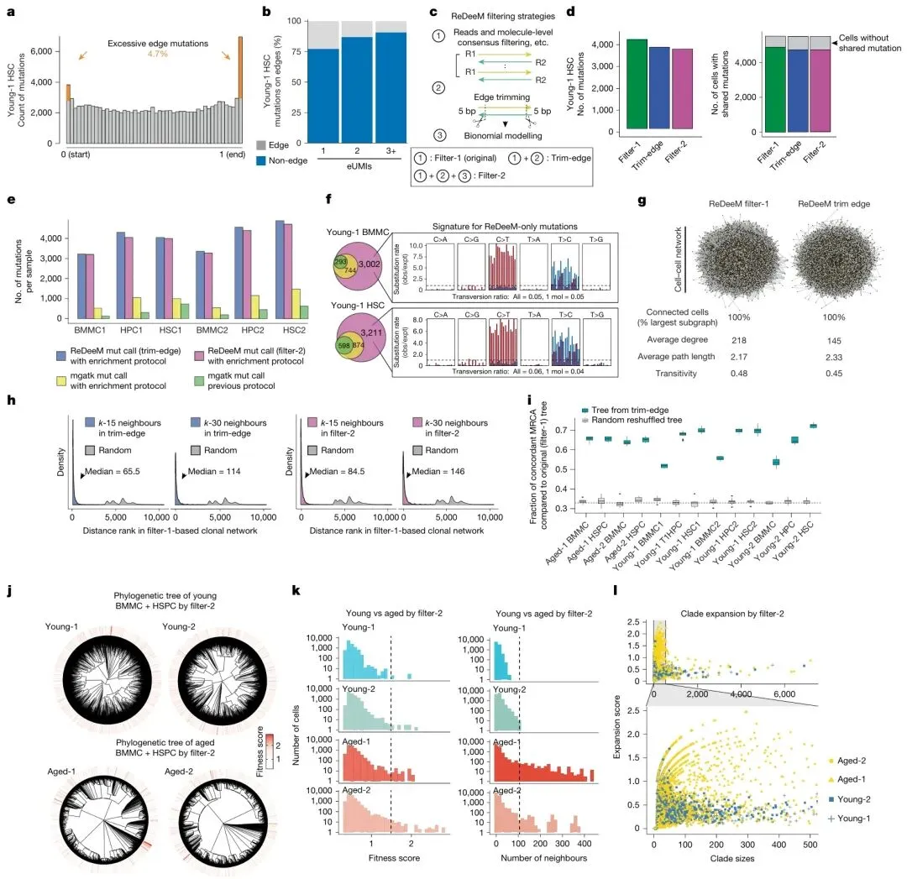
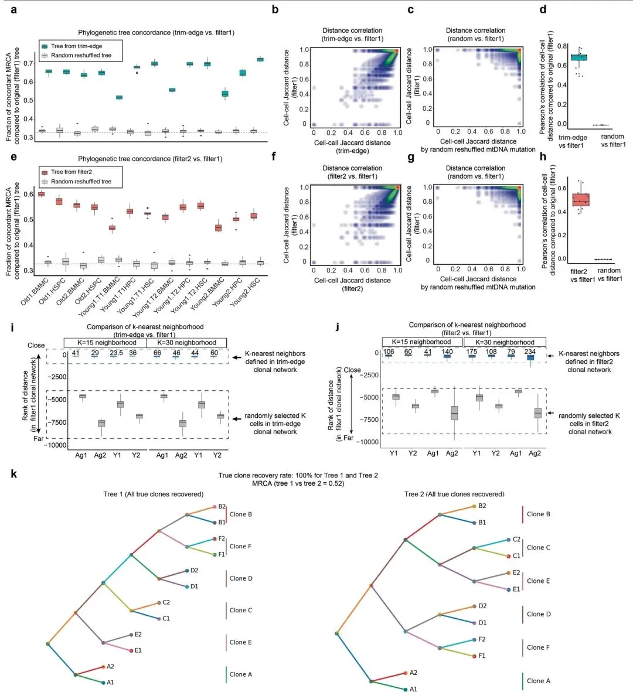

Nature论战｜ReDeeM mtDNA谱系：警惕测序假象带来的结论风险
原文：https://mp.weixin.qq.com/s?__biz=MzAwMzIzOTk5OQ==&mid=2247543080&idx=1&sn=4d85d196edd3fd8e54f40e4e3d7d9ed7&chksm=9b3c5078ac4bd96ec9a362231b7d0191e4d562a424a0ccbb43180ecbe1b88a4e7bbd651602e0#rd 合集：文献速递
一、写在前面
发表时间：2026.08.19
期刊：Nature Matters Arising
核心定位：承接上期「单细胞血统偏见」，探讨单细胞分析计算层面的偏差风险 ；本文讨论仅限于对ReDeeM分析流程的公开质疑，并非否定mtDNA作为谱系标记的整体价值 。
之前我们向大家分享了 《Cell Genomics》：单细胞图谱的种群偏倚，漏掉了数十亿人：全球主流单细胞参考数据集，欧洲人群样本占比过高，亚裔、少数族裔样本缺失，导致细胞注释、biomarker 筛选、AI 模型训练出现系统性偏移。有些课题结果有问题，不是分析不行，是参考数据本身自带偏见。
而8月Nature论战文章，向我们展示了 第二层、更隐蔽的风险：即便样本队列完美，特定分析流程产出的高分辨率mitochondrial DNA（mtDNA）谱系，依然可能混入大量技术假象。
** **
为什么mtDNA谱系追踪备受关注？
在单细胞谱系研究中，mtDNA体细胞突变是极具吸引力的 “天然条形码”。 相比传统外源标记、病毒条形码，它的优势十分突出：
-
突变丰度高：mtDNA突变率远高于核基因组，细胞内存在丰富的异质性突变，具备作为克隆标签的潜力
-
适用场景广：被用于人类造血分化、肿瘤亚克隆演化、组织干细胞溯源、衰老嵌合等诸多方向
2024年Nature主刊工作开发ReDeeM线粒体突变分析流程，宣称实现了超高分辨率人类造血细胞谱系重构，细胞间连接性较此前方法提升约一个数量级，受到领域大量关注，不少课题组参考该流程开展分析。本次8月Matters Arising，正是针对ReDeeM这套方法的重分析与公开质疑。
如果需要单细胞数据分析教学、生信热点全文复现、自测数据个性化分析辅导、实验科研服务和常态化实验学习，欢迎联系客服微信[Biomamba_zhushou]。
**二、主要内容 **
2.1 核心论战：ReDeeM精细谱系树的潜在噪音风险
Lareau团队通过数据集重分析提出：ReDeeM得到的高连通性细胞克隆关系，核心驱动信号可能来源于文库与测序引入的技术假象。
文章定义了一类low‑mean and high‑connectedness（LMHC，低分子支持‑高细胞共享） 变异。
注：LMHC这类变异仅获得极少量分子支持，却出现在大量不同细胞中；并且在测序读段末端位置显著富集，模式和已知Tn5转座、ATAC文库带来的末端测序误差特征高度吻合。
虽然LMHC变异只占全部ReDeeM变异的3.9‑7.1% ，但它们对细胞‑细胞克隆连接的贡献不成比例地巨大 。当过滤掉这类可疑变异之后，原先构建出的精细谱系结构会发生剧烈改变，原本的高分辨率克隆连接大幅减弱。 在年轻供体中，每个细胞平均与2.0%–4.2%的采样细胞存在连接，这一连接规模远超此前领域对造血系统克隆结构的普遍认知。

Fig.1（Lareau）
① 单eUMI分子支持变异的可靠性存疑
ReDeeM流程大量使用仅单分子（1‑2个eUMI）支持的mtDNA变异构建谱系。 质疑方认为：单细胞Multiome扩增体系本身就容易引入碱基错误；仅靠单分子证据的位点很难区分真实体细胞突变和扩增噪音，会虚假地把大量细胞连接成克隆。数据显示，75.4%–85.1%的突变调用仅由1个mtDNA分子支持；将支持阈值提高到2个分子，细胞间连接性直接丢失87.8%–99.9%。
② ATAC文库固有的末端偏差，催生LMHC伪变异
原文证实(Lareau Fig.1f)，LMHC变异在DNA分子两端显著富集，富集倍数达10–20倍，这是ATAC‑seq文库的固有技术偏差；即便使用共识纠错，也无法完全消除这类末端假象。 为量化这一位置偏向，作者借鉴GATK ReadPosRankSumTest思路设计了位置偏向启发式检验，进一步支持了末端富集变异的人工来源属性。
ReDeeM后续提出filter‑2修剪末端变异的策略，但Lareau重分析显示：该策略仅移除约5%的疑似人工变异，却造成53%–99%细胞‑细胞连接丢失 ，filter‑1与filter‑2输出的谱系树全局拓扑近乎随机。
💡 补充：Lareau同时指出另外两个ReDeeM数据的干扰因素
- 细胞封装过程中环境mtDNA污染 （估计占比超过11%）会制造虚假细胞连接，是容易被忽略的实验环节风险；
- 混合供体测试中，该流程无法区分不同供体细胞，提示变异调用流程存在局限。
💡 通用概念澄清
- NUMT（核线粒体假基因）：mtDNA分析领域通用风险点 ，会产生假的mtDNA变异，但并不是本次论战文章的核心论证依据 。
- 线粒体瓶颈效应、遗传漂变：属于真实生物学现象 ，会干扰谱系推断，但不属于文章讨论的artefact（技术假象）范畴。
2.2 论战复盘
这场争论不是“证明ReDeeM完全错误”，而是双方对低频mtDNA突变的信噪比边界、全局树拓扑与局部克隆信息如何解读产生巨大分歧。
质疑方｜Nature Matters Arising（Lareau团队）
ReDeeM得到的超高分辨率克隆连接高度依赖一批疑似技术来源的LMHC变异；谱系结构对过滤参数十分敏感；filter‑1与filter‑2得到的系统发育树全局MRCA（最近共同祖先）比对近乎随机。在没有充分质控的前提下，该流程输出的精细造血细胞谱系结论稳健性不足。同时提醒存在环境mtDNA污染等额外混淆因素。
原作者 Reply 回应（Weng等人）
① 单eUMI分子检出 ≠ 细胞内仅1份mtDNA拷贝。
受文库捕获效率影响，按Reply的估算，检出1个变异分子意味着该变异平均存在于约10个mtDNA拷贝中（范围2–53个）；这类变异可以有效传递给子代细胞，具备生物学意义。
② LMHC仅占总变异约5%，属于少数。
大量单分子变异并不是LMHC，且具备真实mtDNA突变的特征：转换突变占比高，颠换比例仅0.11–0.14(Weng Reply Fig.1e)，而未过滤背景的颠换比例为0.52–0.56，约为前者的4–5倍；同时有CRISPR谱系实验佐证这类变异的有效性。直接剔除全部单分子变异会大量丢弃真实生物学信号。

Fig.1（Weng Reply）
③ 全局MRCA拓扑改变 ≠ 局部克隆信息失效。
MRCA衡量系统发育树深层分支，而文章核心结论聚焦于树末端的局部克隆关系；过滤后k‑近邻克隆结构依然高度保留，平均连接度下降但网络路径长度、传递性等结构指标保持稳定。
④ filter‑2修剪末端序列可以缓解LMHC假象。
经过该过滤，年轻供体多克隆、老年供体克隆扩张这些核心生物学结论依然可以复现(Weng Reply Fig.2j–l)。ReDeeM并不追求完美无缺的完整系统发育树，目标是拓展mtDNA可检测突变谱，获取可用的局部谱系信息。

Fig.2（Weng Reply）
2.3 这场争论尚无标准答案
这是本篇论战最值得思考的地方：
① 质疑方立足点：测序片段末端富集、参数高度敏感、全局树拓扑近乎随机，是技术假象很强的警示信号；低分子位点假阳性风险、环境mtDNA污染都无法忽视。
② 原作者立足点：人体内造血系统本身就存在大量低频mtDNA体细胞突变；粗暴剔除单分子信号会丢失真实生物学信息；全局拓扑变化不代表局部克隆结论失效(Weng Reply Extended Data Fig.3k)。

Fig.3（Weng Reply Extended Data）
领域当下并没有统一金标准：到底哪些单分子mtDNA变异是真突变，哪些是噪音。 这也是为什么这篇Matters Arising以学术评论形式刊出，而不是直接判定该工作无效。
总结：mtDNA做谱系溯源依然是有价值的方向，但直接一键跑流程、缺少多维质控得到的高分辨率谱系，需要格外审慎对待 。
三、总结与讨论
mtDNA谱系质控避坑清单：
提示：部分条目存在本次论战带来的领域争议，需要结合自己的数据情况权衡。
-
规避NUMT干扰：使用NUMT黑名单对变异位点做过滤，这是mtDNA分析通用基础质控。
-
审慎对待单eUMI分子支持变异：这是本次论战核心分歧点。质疑方警惕单分子变异大量引入假象；原作者认为部分单分子变异是真实突变，直接舍弃会丢失生物学信号。 实操建议：不要简单全部删除或全部保留；结合读段末端富集情况、转换‑颠换突变特征、细胞重复出现情况多维度综合评估这类位点。
-
重点评估测序片段两端富集的变异：对读段末端位置异常富集的突变提高警惕，必要时启用末端修剪策略做对比测试。
-
拒绝依靠单个mtSNV判定克隆关系：判定细胞克隆归属，尽量依靠多个突变联合佐证。
-
开展参数敏感性测试：调整变异过滤阈值，观察谱系树、克隆分组是否剧烈波动；如果结果随参数摇摆严重，结论可信度要打折扣；建议同时输出多套过滤参数结果做对比。
-
尽量做正交验证与污染防控：有条件情况下结合CNV、TCR、表观突变等其他谱系证据交叉佐证，不把mtDNA信号作为唯一证据来源；同时留意实验中的环境mtDNA污染风险。
从上次的血统样本偏见，到本月这场围绕ReDeeM的mtDNA谱系论战，我们可以看到一个清晰的领域趋势：
现在的单细胞科研，早已不是“会跑算法、会出好看的图”就足够。 顶级期刊越来越看重结果的真实性、稳健性、可重复性。
第一层偏差，来自公共数据集采样的先天不足； 第二层风险，来自分析流程、参数选择带来的潜在假象。
mtDNA谱系追踪依旧是成本很低、潜力很大的研究手段，但严谨的噪音评估，远比花哨好看的谱系可视化树更加重要。 对于从事肿瘤克隆、干细胞分化、细胞溯源方向的研究者：在使用低频mtSNV构建高分辨率克隆时，一定要把质控和参数敏感性纳入考量。
四、参考
[1]质疑及回应文献:
Lareau CA, Chapman MS, Penter L, Nawy T, Pe'er D, Ludwig LS. Artefacts in single-cell mtDNA analyses misinform phylogenies. Nature. 2026 Aug;656(8128):E25-E31. doi: 10.1038/s41586-026-10777-0. Epub 2026 Aug 19. PMID: 42618761.
[2]被质疑原文：
Weng C, Yu F, Yang D, Poeschla M, Liggett LA, Jones MG, Qiu X, Wahlster L, Caulier A, Hussmann JA, Schnell A, Yost KE, Koblan LW, Martin-Rufino JD, Min J, Hammond A, Ssozi D, Bueno R, Mallidi H, Kreso A, Escabi J, Rideout WM 3rd, Jacks T, Hormoz S, van Galen P, Weissman JS, Sankaran VG. Deciphering cell states and genealogies of human haematopoiesis. Nature. 2024 Mar;627(8003):389-398. doi: 10.1038/s41586-024-07066-z. Epub 2024 Jan 22. PMID: 38253266; PMCID: PMC10937407.
Oria
如何联系我们

 留一个领取资料、开箱即用的单细胞分析镜像的助手[Biomamba_zhushou]，方便各位随时交流。同时我们也构建了交流群矩阵，欢迎大家一起讨论。
留一个领取资料、开箱即用的单细胞分析镜像的助手[Biomamba_zhushou]，方便各位随时交流。同时我们也构建了交流群矩阵，欢迎大家一起讨论。
 您点的每个赞和在看，我都认真当成了喜欢
您点的每个赞和在看，我都认真当成了喜欢